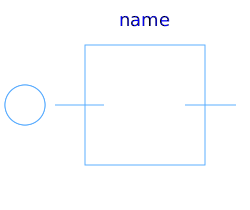
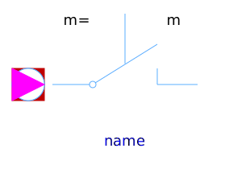
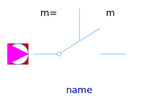

This package hosts ideal models for quasi stationary multiphase circuits. Quasi stationary theory can be found in the references.
| Name | Description |
|---|---|
|  Idle | Idle branch |
| Short cut branch | |
|
|
Multiphase ideal commuting switch |
|
|
Multiphase ideal intermediate switch |
|  IdealOpeningSwitch | Multiphase ideal opener |
|  IdealClosingSwitch | Multiphase ideal closer |